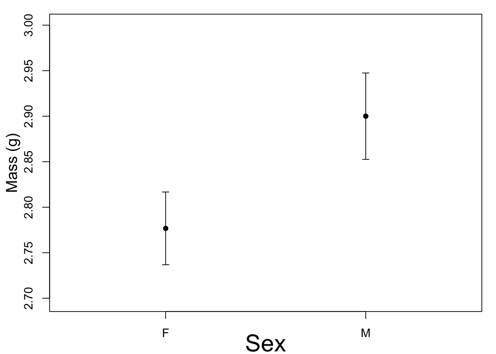

Plot the data
Visualize the raw data
par(mfrow = c(1,1),mar = c(3,3.5,1,1))
boxplot(Bwt ~ Sex, data = cats)Plot the means with error bars
This uses the errbar() function. A modern contemporary way would use ggplot2 and possibly its extension using ggpubr.
The real data
This is the actual data. The 95% confidence intervals do not overlap, which indicates that the p-value for the t-test will be less than 0.05.
library(Hmisc)## Loading required package: lattice## Loading required package: survival## Loading required package: Formula## Loading required package: ggplot2##
## Attaching package: 'Hmisc'## The following objects are masked from 'package:base':
##
## format.pval, unitspar(mfrow = c(1,2),mar = c(3,3.5,1,1))
y.lim <- c(2.295,3)
Hmisc::errbar(1:2,
y = cat.df3$Bwt.mean,
yplus =cat.df3$Bwt.mean + cat.df3$SE,
yminus = cat.df3$Bwt.mean-cat.df3$SE,
xlab = "",
ylab = "",
xlim=c(0.5,2.5),
ylim = y.lim,
xaxt="n",cex =1)
axis(side=1,at=1:2,labels=cat.df3$Sex)
mtext("Sex", side = 1, line = 2, cex = 2)
mtext("Mass (g)", side = 2, line = 2.1, cex = 1.3)
Hmisc::errbar(1:2,
y = cat.df3$Bwt.mean,
yplus =cat.df3$Bwt.mean + 1.96*cat.df3$SE,
yminus = cat.df3$Bwt.mean-1.96*cat.df3$SE,
xlab = "",
ylab = "",
xlim=c(0.5,2.5),
ylim = y.lim,
xaxt="n",cex =1)
axis(side=1,at=1:2,labels=cat.df3$Sex)
mtext("Sex", side = 1, line = 2, cex = 2)
mtext("Mass (g)", side = 2, line = 2.1, cex = 1.3)
Modified data with a non-significant different
Make an alternative version of the data where there isn’t a difference between the male and female cats
cat.df3.mod <- cat.df3
cat.df3.mod$Bwt.mean[1] <- cat.df3$Bwt.mean[2]-cat.df3$Bwt.mean[2]*0.0425The overlap of the error bars here is greater than 1/2 the length of the bar; therefore the p-value for a t-test will be > 0.05.
y.lim <- c(2.6975,3)
par(mar = c(3,3.5,1,1))
Hmisc::errbar(1:2,
y = cat.df3.mod$Bwt.mean,
yplus =cat.df3.mod$Bwt.mean + cat.df3.mod$SE,
yminus = cat.df3.mod$Bwt.mean-cat.df3.mod$SE,
xlab = "",
ylab = "",
xlim=c(0.5,2.5),
ylim = y.lim,
xaxt="n",cex =1)
axis(side=1,at=1:2,labels=cat.df3.mod$Sex)
mtext("Sex", side = 1, line = 2, cex = 2)
mtext("Mass (g)", side = 2, line = 2.1, cex = 1.3)
Hmisc::errbar(1:2,
y = cat.df3.mod$Bwt.mean,
yplus =cat.df3.mod$Bwt.mean + 1.96*cat.df3.mod$SE,
yminus = cat.df3.mod$Bwt.mean-1.96*cat.df3.mod$SE,
xlab = "",
ylab = "",
xlim=c(0.5,2.5),
ylim = y.lim,
xaxt="n",cex =1)
axis(side=1,at=1:2,labels=cat.df3.mod$Sex)
mtext("Sex", side = 1, line = 2, cex = 2)
mtext("Mass (g)", side = 2, line = 2.1, cex = 1.3)